Velocitty 1.3.1 - Proving Progress Redraws Obsolete
What's new!
Previously, on Velocitty 1.3.0, we only looked at how floods of text would scroll off rows and how that can be programatically checked and skip painting while still preverving correct VT parsing. Now, we'll look at how text can be made obsolete within the same row.
Because this is an extremely common pattern in a lot of small workloads, it is applied for updates of at least 64 bytes. And it worked!
The number of instructions on progress-bar workloads is down by 65%!
Given that a large amount of people currently user terminals for agent CLIs and updating packagage managers, this is basically preventing the ice caps from melting.
CR Skip
Carriage return (CR) --- depicted as '\r' in most programming languages
--- is one of many ways a cursor can be sent to the start of a line. It returns the
cursor to the beginning of a column. This means that if, for example, we
recieve a few dozen progress bar updates between frames, we are just rewritting the same
row over and over again. We can just write the final result.


But is it cheap?
Checking whether a redraw can be skipped is cheap. In a 4 MiB test it skipped about 4 MB of input, and all the checks together took under 0.4 ms. To measure it yourself:
zig build bench -Dbench-profile=true -- --only drain,progress --mib 1 --ring 1024 --profile-obsoleteWhen it applies
The current implementation only attempts this optimization for updates of at least 64 bytes.
The skip only kicks in when Velocitty is behind on input, and only for plain text that stays on one row. Anything else, like wrapping, insert mode or combining characters, is parsed normally.
A shorter update doesn't erase the rest of the row, so the end of the old text is still visible:
Input: ABCDE\rxy
Display: xyCDEEvery one of these cases is tested with and without the skip, and the screen ends up identical.
Performance gains
Long progress updates (106 bytes) use 65% fewer instructions. Short ones (26 bytes) are under the 64-byte cutoff, so they barely change. Everything else stays within 2% of 1.3.
| Workload | 1.3 | 1.3.1 | Change |
|---|---|---|---|
| Progress, 106-byte updates | 137.91 | 48.48 | −64.85% |
| Short redraws, 26-byte updates | 255.12 | 251.17 | −1.55% |
| Scrolling ASCII | 100.58 | 99.27 | −1.30% |
| Unicode | 298.15 | 296.55 | −0.54% |
| CSI redraws | 746.36 | 740.90 | −0.73% |
How we measured
- Intel Core i7-10610U, Zig 0.17.0, ReleaseFast, Linux.
- Parsing only: no fonts, rendering or window (
+terminal-stream --drop). - Median of three runs of
perf stat -e instructions:u.
We count instructions rather than time because a laptop's clock speed varies. 65% fewer instructions does not mean 65% faster frames or lower latency.
1.3 archive
For how Velocitty compares with Ghostty, see the 1.3 benchmarks.
Changelog
- Progress-bar redraws of 64 bytes or more are skipped when a later update covers them.
- Scrolling moves rows instead of copying cells.
- Escape sequences with more than 32 parameters no longer corrupt the last one.
- Kitty graphics supports zlib-compressed images (
o=z), and replies include both the image and placement ID. - Images are decoded with wuffs instead of stb_image: about twice as fast for PNG, and Apple CgBI PNGs and JPEGs missing their end marker now load.
- Images decode on worker threads when they first become visible; uploads read only the header, so a large image no longer stalls a frame.
- Images on screen are redrawn only when they change: typing next to a full-window image costs 0.05 ms per frame instead of 2.6 ms.
- Kitty commands that leave images unchanged no longer mark every line dirty.